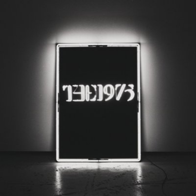
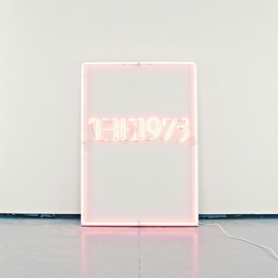
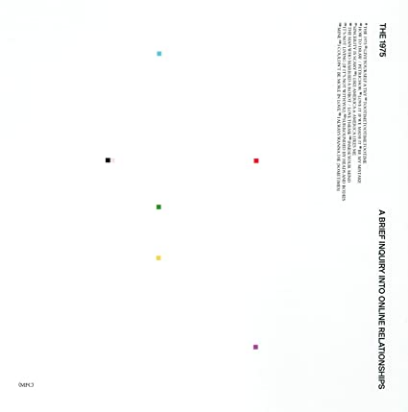
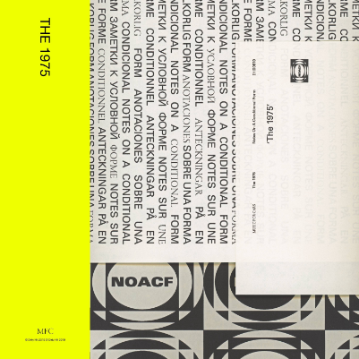

THE
1975
マンチェスター出身の謎めいたこの４人組。
陰鬱なアート・ロックと、冷ややかなエレクトロニカ、
ダンスフロア系R&Bに、キンキンしたヒップホップ、
微かな光の揺らめくバラードや、
80年代風のベタなポップとの間を縦横無尽に行き来する彼らの音楽に、
評論家達は当惑し、戸惑いながらも心奪われ、
純粋に胸を躍らせてきた。

THE 1975
『The 1975』に詰め込まれている音楽的なアイディアは、驚くほど盛りだくさんだ。その音楽的な節操のなさ、あるいは折衷性は、間違いなく現代的だと言える。だが、やはり彼らの最大の魅力とは、そういった重層的なサウンドを下手に小難しくインテリジェントに仕上げるのではなく、日曜の昼下がりに車のラジオをつけていたら何気なくトップ40の番組から流れてくるのがしっくりとくるような、強度の高いポップスに昇華出来ているところだろう。
ザ・サイン・マガジン・ドットコム「薄暗い路地裏から抜け出し、ひたすらきらびやかな
表通りに飛び出た、新世代マンチェスター・バンドが夢見る先はどこか」

I Like It When You Sleep,
For You Are So Beautiful
yet So Unaware of It
”戦争は答えではない”と哀しげに歌うマーヴィンゲイの声に込められたメッセージと深い悲しみはいつの時代にも訴えかける力強さがある。ある意味では、その柔軟性こそが優れた音楽の条件なのかもしれない。そういった意味でも、The 1975の2ndアルバムは間違いなく今の時代を代表する一枚と呼べるだろう。
音楽文「The 1975『君の寝ている姿が〜』と多様性とヒューマニズム」

A Brief Inquiry Into
Online Relationship
暴力と差別、権力と搾取、そして格差による構造の二極化など、対立と分断が進み混沌を極める2018年の熱気を冷まし包み込むセラピーのような優しさと失望感にも似た批評が重なりあった、時代を更新するかのようなアルバムだ。
音楽文「グローバリズムとThe 1975のラブソング」

Notes On a Conditional Form
日本でも新型コロナの影響で世間の目が社会と世界に向けざるを得ない日常になっている。コロナ禍は、80年代以降、政治の匂いが脱臭された日本の文化に、再び社会的な視点を取り戻すチャンスだ。文化に逃避主義を求める時代は終わったんだよ。僕らは社会と向かい合って、脆くなった社会を再び建て直していこう。その時に本作『Notes On A Conditional Form』が素敵なサウンドトラックになるだろう。
とかげ日記「THE 1975『Notes On A Conditional Form』感想&レビュー」
The 1975 - Matty Healy breaks down
The 1975’s videos from ‘A Brief Inquiry…’
The 1975のフロントマン・マティーが、アルバム『A Brief Inquiry into Online Relationships』に収録されているＭＶについて掘り下げていく。イースターエッグやこれまで知られていなかった詳細を明らかにしながら、The 1975が紡ぐすべてのアートを解説する。
VIDEO
view more
STORE